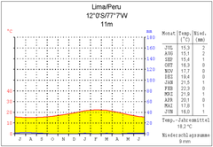
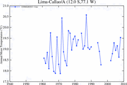

INTRODUCCIÓN
El 18 de enero de 1535, se efectuó la fundación española con el nombre de la Ciudad de los Reyes en la región agrícola conocida por los indígenas como Lima, nombre que adquirió con el tiempo. Fue la capital del Virreinato del Perú y la más grande e importante ciudad de América del Sur durante la América imperial española. Después de la Independencia pasó a ser la capital de la República.
En la actualidad está considerada como el centro político, cultural, financiero y comercial del país. A nivel internacional, es la tercera área metropolitana más poblada de Hispanoamérica, además la ciudad ocupa el quinto lugar dentro de las ciudades más pobladas de América Latina y es una de las treinta aglomeraciones urbanas más pobladas del mundo. Por su importancia geoestratégica, ha sido definida como una ciudad global de «clase beta».
Jurisdiccionalmente, la metrópoli se extiende mayoritariamente dentro de la provincia de Lima y en una porción menor, hacia el oeste, dentro de la provincia constitucional del Callao, donde se encuentran el puerto marítimo y el aeropuerto Jorge Chávez. Ambas provincias cuentan con autonomía regional desde el año 2002.
Clima
El clima de la ciudad resulta especialmente particular dada su situación. Combina una ausencia casi total de precipitaciones, con un altísimo nivel de humedad atmosférica y persistente cobertura nubosa. Así, sorprende por sus extrañas características a pesar de estar ubicada en una zona tropical a 12 grados latitud sur y casi al nivel del mar. La costa central peruana, muestra una serie de microclimas atípicos debido a la influyente y fría corriente de Humboldt que se deriva de la Antártida, la cercanía de la cordillera de los Andes y su ubicación geográfica, dándole a Lima un clima subtropical, fresco, desértico y húmedo a la vez.
Se puede decir, que tiene un clima tibio sin excesivo calor tropical ni fríos extremos que requieran tener calefacción en casa, a excepción de muy pocos inviernos. La temperatura promedio anual es de 18,5 a 19 °C, con un máximo estival anual de unos 29 °C. Los veranos, de diciembre a abril, tienen temperaturas que oscilan entre los 29 a 30 °C durante el día y 21 a 22 °C en las noches. Solamente cuando ocurre el Fenómeno del Niño, la temperatura en la estación de verano puede superar los 31 °C. Los inviernos van de junio a mediados de septiembre, con temperaturas que oscilan entre los 19 y 12 °C, siendo 8,8 °C la temperatura más baja comprobada históricamente.57 Los meses de primavera y otoño (septiembre, octubre y mayo), tienen temperaturas templadas que oscilan entre los 23 y 17 °C.
Por otro lado, la humedad relativa es sumamente alta (hasta el 100%), produciendo neblina persistente de junio a diciembre hasta la entrada del verano cuando las nubes son menores. Es soleado, húmedo y caliente en los veranos (diciembre-abril), nuboso y templado en los inviernos (junio a septiembre). La lluvia es casi nula.58 El promedio anual es de 7 mm reportado en el Aeropuerto Internacional Jorge Chávez, siendo la menor cantidad en un área metropolitana en el mundo.[cita requerida] Una lluvia en Lima puede ser vista como un fenómeno extraño por la mayor parte de la población.


Folclore
Danzas del Lima
Agua'e nieve
Baile de zapateo competitivo entre bailarines independientes de ambos sexos acompañado con guitarra, con giros de clara procedencia española. Se practicaba en el norte chico de la costa central, provincia de Huaral. El principal cultor de este género era don Porfirio Vásquez, oriunde de Aucallama, junto al maestro de guitarra don Vicente Vásquez. Don Porfirio hizo el registro de esta melodía, que fue grabada en el disco "Cumanana", que dirigió Nicomedes Santa Cruz en la década de 1970.
Amor fino
Género musical de competencia cantado en el que participa un número indeterminado de personas. No se baila. Se practicaba en Lima y en el norte chico, sobre todo en Aucallama. Acompaña un guitarrista. En el barrio limeño de Malambo destacó en su cultivo don Mateo Sancho Dávila integrante y cabeza visible de decimistas conocidos como "los doce pares de Francia". Se recuerda una melodía que la difundió don Augusto Ascuez, quien decía que el Amor Fino es muy alegre. Por lo general se cantaba al final de un baile familiar o social en rueda de ocho cantantes y con el guitarrista al centro. La regla prohibía repetir el verso que ya hubiera sido cantado. Termina la competencia al quedar solo uno de los cantantes.en esa época rea muy aburrido y no les gusto
Alcatraz
Danza del género Festejo, vigente especialmente en Lima e Ica. Es una danza erótica festiva, de pareja suelta. Hombre y mujer llevan en la parte posterior de la cintura, un trapo, un pedazo de papel o algo similar; el hombre con una vela encendida trata de prender el ¨cucurucho¨ mientras la mujer baila moviendo las caderas. Actualmente en la coreografía también la mujer trata de quemar al hombre. La música es interpretada por solista y coro de cantantes, guitarras y percusión, los temas más conocidos pertenecen a Don Porfirio Vásquez y a su hijo Abelardo como “Al son de la tambora” y “Negrita ven” respectivamente. Debía su nombre a un atuendo de plumas del alcatraz que la mujer llevaba atado a la espalda, a la cual debía el hombre ponerle fuego con una vela encendida, pero sin que ninguno de los bailarines perdiese el ritmo.
Cabe
El cabe era una especie de danza y ritual, donde dos participantes entraban en un círculo formado por personas al son de los tambores, entrelazaban sus piernas a modo de enfrentamiento cuerpo a cuerpo y a modo de entrenamiento físico. Actualmente este arte se ha perdido.
Canto de jarana
La marinera limeña es conocida como "canto de jarana", en la que cantantes de manera individual o en dúo establecen una competencia literaria y musical, respetando una estructura.
Conga
Tendría similitud con la zamacueca. Elogiada y descrita por Ricardo Palma como una expresión creada durante la revolución de don José Balta en Chiclayo, sin embargo existe información de que tal forma musical ya existía desde antes. Mejía Baca afirma que es un género que se cultivaba para resaltar eventos o acontecimientos históricos, así se puede constatar por ejemplo con la presencia de la Fiebre amarilla u otros acontecimientos que impactan en la sociedad.
Congorito
Forma de Festejo cuya característica fundamental es la repetición del estribillo que dice: "congorito digo yo, congorito" alternándose con cuartetas diversas. Es uno de los festejos más antiguos que se recuerdan, cuya letra fue recopilada en 1938 por Rosa Mercedes Ayarza de Morales.
Danza Habanera
Género musical de Cuba, transformación a su vez de un género originario de las Islas Canarias. Regresa a España incorporándose a la Zarzuela, siendo muy popular en América hispana. Es uno de los ritmos que da nacimiento al Tango. Su temática es libre, dedicada especialmente al tema amoroso. Generalmente es un ritmo lento, pero acelera su dinámica de acuerdo a la temática del texto.
COMO LLEGAR A LIMA
Vuelos Internacionales desde / hacia Lima
El Aeropuerto Internacional Jorge Chávez (Código de aeropuerto LIM) en la ciudad de Lima es la principal entrada para los vuelos internacionales hacia Perú.
-
Desde New York - Newark, Atlanta, Miami, Houston, Los ángeles, Toronto, México y Cancún hay vuelos directos hacia Lima.
-
Desde Europa existen vuelos directos a Lima desde Madrid, Londres, París y ámsterdam.
-
Perú recibe vuelos directos desde las principales ciudades de Latino América como Bogotá, Buenos Aires, Caracas, Guayaquil, Iguazú, La Habana, La Paz, México, Panamá, Quito, Guayaquil, Río de Janeiro, Santiago, Sao Paulo, San José de Costa Rica, San Salvador, Santo Domingo, Punta Cana.
-
Los vuelos desde Asia u Oceanía hacia el Perú requieren conexión por EE.UU. o Europa.
Vuelos Domésticos desde / hacia Lima
Para aquellos que disponen de tiempo limitado para visitar el Perú, la mejor forma de viajar es por avión. Los principales destinos turísticos del Perú cuentan con aeropuertos y vuelos regulares, servidos con modernas flotas de aeronaves de diversas compañías aéreas peruanas.
La programación de vuelos a ciudades de altura en la zona andina (Cusco, Juliaca - Puno, Arequipa ) normalmente se hacen desde muy temprano en la mañana (5 am). Los vuelos a las ciudades de costa y selva del Perú se realizan con vuelos diurnos y vuelos nocturnos. No es habitual vuelos domésticos después de las 10 pm.
El Aeropuerto Internacional Jorge Chávez en la ciudad de Lima es el principal hub para todas las conexiones de vuelos domésticos en Perú.
Perú es un país con grandes distancias entre sus principales atracciones turísticas. De Lima al Cusco hay 1,165 Km. de distancia; siendo necesarias 20 horas para llegar en autobús y 1h 15' para llegar por aire.
Viajes en autobús desde / hacia Lima
El viaje en autobús es el medio de transporte más popular para viajar entre los principales destinos turísticos del Perú, con servicios cómodos, económicos y seguros. Prácticamente desde cualquier provincia del interior del Perú se puede llegar hasta Lima.
Existen empresas de transporte interprovincial en autobús con modernas flotas de vehículos con asientos-cama, cabina temperada, servicio de Wi-Fi y entretenimiento abordo.
La mayoría de rutas son servidas en horario nocturno, lo cual le permitirá disfrutar el máximo de tiempo en cada destino y ahorrarse el alojamiento de hotel.
Distancias desde Lima a ciudades del norte
Ciudad |
Kilómetros |
Millas |
|---|---|---|
Huaraz (vía Pativilca) |
400 |
248 |
Trujillo |
557 |
346 |
Cajamarca |
861 |
531 |
Chiclayo |
763 |
474 |
Piura |
1,050 |
652 |
Máncora |
1,212 |
753 |
Zorritos |
1,283 |
797 |
Tumbes |
1,310 |
814 |
Aguas Verdes / Huaquillas Ecuador |
1,335 |
830 |
Distancias desde Lima a ciudades del sur
Ciudad |
Kilómetros |
Millas |
|---|---|---|
Cañete |
148 |
91.97 |
Chincha |
200 |
124.28 |
Pisco |
250 |
155.30 |
Paracas |
285 |
177.10 |
Ica |
325 |
201.96 |
Nazca |
460 |
285.84 |
Ayacucho |
543 |
357.31 |
Andahuaylas |
832 |
517.00 |
Abancay |
907 |
602.76 |
Cusco |
1,165 |
723.93 |
Arequipa |
1,030 |
640.04 |
Puno |
1,315 |
817.14 |
Tacna |
1,348 |
837.65 |
Arica - Chile |
1,430 |
888.60 |
Distancias desde Lima a ciudades del centro
Ciudad |
Kilómetros |
Millas |
|---|---|---|
Chosica |
47 |
29.21 |
La Oroya |
185 |
114.96 |
Tarma |
244 |
151.62 |
Jauja |
266 |
165.29 |
Cerro de Pasco |
295 |
195.74 |
Huancayo |
298 |
192.63 |
La Merced |
319 |
198.23 |
Oxapampa |
396 |
246.07 |
Huancayo |
415 |
257.88 |
Pucallpa |
840 |
521.98 |